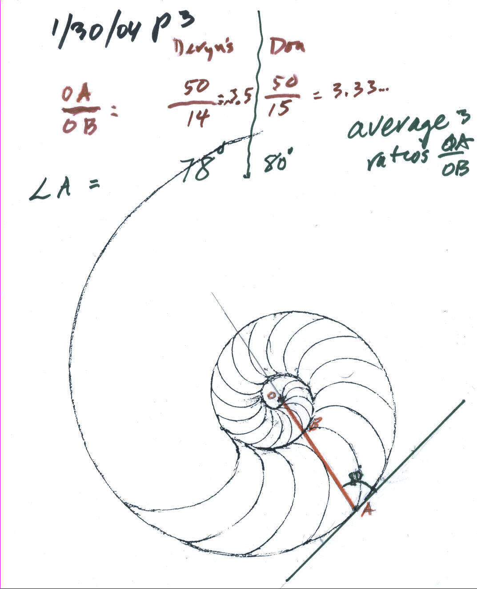

The growth of the Nautillus shell
Deryn, age 10, works with Don via IM, from WV
Don showed Deryn the whole Nautilus shell he has in his math room, from which came a watercolor painting, and the picture on each of his books and his logo. He had Deryn get her protractor and ruler and look at the 1/2 Nautilus shell on p. 103 in Don's worksheet book- made from a rubbing of his 1/2 shell. They were going to study how the shell grows:
Don showed Deryn how to draw a radius vector, a line from the center O to the edge of the shell at point A (in red), passing though point B at the at the inner edge. From point B around to point A is a 360� turn. They each measured the lengths OA and OB in millimeters, then found the ratio of OA/OB. Deryn got 50/14= 3.5 and Don got 50/14= 3.333... Don asked Deryn to do two other examples like this on the shell and average these three ratios.

Then Don showed Deryn how to measure an angle with a protractor--a little difficult looking at a webcam picture. He showed Deryn how to draw a tangent line (touching the curve at only one point, A) . Don extended the line through O to better measure the angle. They each measured the smaller angle at point A, shown above. Don measured 80� and Deryn measured 78�. Deryn was to draw a tangent at two other points and measure the smaller angle in each case, then average these angles.
This was a difficult task; we'll see what Deryn came up with the next week.
They averaged the ratios of OA/OB to see how the shell grew in 360� On Deryn's diagram below, she got 3.5 and 3.7, and Don got 3.3, 3.5 and 3.0 at other places on the shell. After a slight error adding these, she got 17.03/5 = 3.4 for the average. In The Language of Mathematics by Land, he came up with 3.2 (an error of about 6%). This is a constant a growth, no matter where one does the measurements!

Deryn measured the smaller of the two angles that the radius vector makes with the tangent to the shell. She got 78�, and 81�, and Don got 80�, 81� and 79� and she figured out the average to be 79.8�. The book gives 79.5�, so they were very close.
Because Deryn wasn't sure how to divide 37 by 10 quickly, they worked on dividing by 10, and 100, and multiplying by 10 and 100, the easy way.
The math she used: measuring lengths in mm, finding ratios, division, how a protractor works, measuring angles, finding averages, and drawing tangents to a curve.
To see all of Deryn's work with Don click here.
From Deryn's Mom in WV:
Deryn's Dad and I were quite pleased with the work you did with our daughter Deryn in such a short time [via IM]. I think you will be happy to know that she continues to do well in math classes and was a member of her school�s Math Counts team this year. That is a pretty impressive turnaround for a kid who hated math more than any other subject! Best wishes.
Vickie, a 9th grader, found by filling chambers of the shell with water, using her own units of volume she called "Vickies", that the volume of a chamber increases by about 6.9% in forming a new chamber. [She found in the book On Size and Life, which is in The Scientific American Library, that the increase in volume is about 6.3%. Vickie was very close! She also found that the area of the chambers is proportional to the square of a length times a factor of ~0.3, which is a constant.
See the applet Don and Lori made in GeoGebra Notice the radius shown on the left, is 1 when the point P is at the starting point on the curve and 3.2 when it is next on the x-axis, 360o from the starting point.
See the graphs of spirals, including the Nautilus.
See how to make a spiral
To ch.6 answers for more on the Nautilus